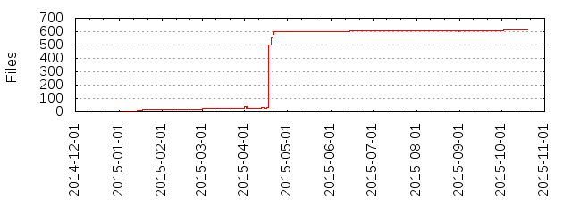

Files
- Total files
- 612
- Total lines
- 173085
- Average file size
- 133994.01 bytes

| Extension | Files (%) | Lines (%) | Lines/file |
|---|
| 36 (5.88%) | 12357 (7.14%) | 343 |
| Borland | 1 (0.16%) | 57 (0.03%) | 57 |
| CV | 1 (0.16%) | 3036 (1.75%) | 3036 |
| LIB | 1 (0.16%) | 504 (0.29%) | 504 |
| Watcom | 1 (0.16%) | 62 (0.04%) | 62 |
| WinCE | 1 (0.16%) | 6 (0.00%) | 6 |
| a | 20 (3.27%) | 64233 (37.11%) | 3211 |
| ac | 1 (0.16%) | 221 (0.13%) | 221 |
| bat | 1 (0.16%) | 13 (0.01%) | 13 |
| cpp | 16 (2.61%) | 2121 (1.23%) | 132 |
| css | 2 (0.33%) | 232 (0.13%) | 116 |
| cygming | 1 (0.16%) | 25 (0.01%) | 25 |
| cygwin | 1 (0.16%) | 24 (0.01%) | 24 |
| darwin | 1 (0.16%) | 28 (0.02%) | 28 |
| darwin-ppc | 1 (0.16%) | 28 (0.02%) | 28 |
| def | 5 (0.82%) | 3628 (2.10%) | 725 |
| dll | 24 (3.92%) | 64694 (37.38%) | 2695 |
| exe | 4 (0.65%) | 2300 (1.33%) | 575 |
| freebsd | 1 (0.16%) | 22 (0.01%) | 22 |
| glsl | 10 (1.63%) | 222 (0.13%) | 22 |
| gnu | 1 (0.16%) | 22 (0.01%) | 22 |
| guess | 1 (0.16%) | 1523 (0.88%) | 1523 |
| h | 141 (23.04%) | 82978 (47.94%) | 588 |
| haiku | 1 (0.16%) | 29 (0.02%) | 29 |
| hpp | 173 (28.27%) | 26921 (15.55%) | 155 |
| html | 11 (1.80%) | 4748 (2.74%) | 431 |
| in | 1 (0.16%) | 11 (0.01%) | 11 |
| inl | 104 (16.99%) | 30449 (17.59%) | 292 |
| irix | 1 (0.16%) | 22 (0.01%) | 22 |
| jpg | 1 (0.16%) | 9 (0.01%) | 9 |
| kfreebsd | 1 (0.16%) | 22 (0.01%) | 22 |
| la | 2 (0.33%) | 82 (0.05%) | 41 |
| lib | 6 (0.98%) | 1734 (1.00%) | 289 |
| linux | 1 (0.16%) | 36 (0.02%) | 36 |
| m4 | 2 (0.33%) | 404 (0.23%) | 202 |
| md | 1 (0.16%) | 9 (0.01%) | 9 |
| mhr | 2 (0.33%) | 648 (0.37%) | 324 |
| mingw | 1 (0.16%) | 21 (0.01%) | 21 |
| nacl-32 | 1 (0.16%) | 36 (0.02%) | 36 |
| nacl-64 | 1 (0.16%) | 36 (0.02%) | 36 |
| netbsd | 1 (0.16%) | 22 (0.01%) | 22 |
| obj | 2 (0.33%) | 2121 (1.23%) | 1060 |
| openbsd | 1 (0.16%) | 22 (0.01%) | 22 |
| pc | 4 (0.65%) | 52 (0.03%) | 13 |
| png | 2 (0.33%) | 39 (0.02%) | 19 |
| solaris | 1 (0.16%) | 18 (0.01%) | 18 |
| txt | 16 (2.61%) | 864 (0.50%) | 54 |
| wav | 3 (0.49%) | 102017 (58.94%) | 34005 |